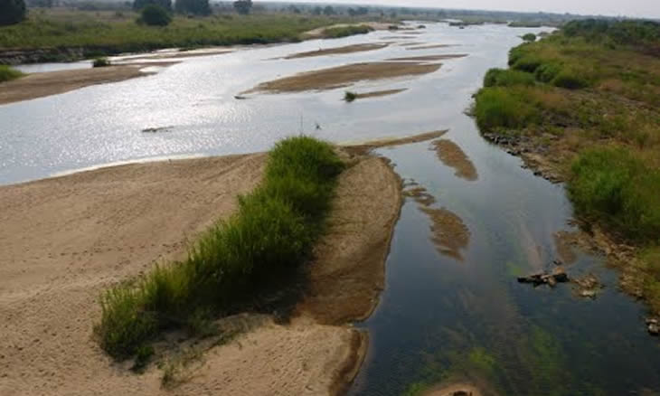

Data
21 de Novembro de 2026
EYES TO EARTH — STUDENT WORKSHOP 2
Ciência, tecnologia e inovação para compreender os recursos hídricos e apoiar a previsão de cheias.
21 de Novembro de 2026 | Maputo, Moçambique
Conhecer o WorkshopO segundo Workshop de Estudantes EYES TO EARTH foi uma oportunidade de aprendizagem, partilha de conhecimentos e exploração de tecnologias inovadoras aplicadas à monitorização dos recursos hídricos.
A iniciativa reuniu 12 participantes de diferentes níveis académicos e áreas de formação, promovendo o diálogo entre ciência, observação da Terra e inteligência artificial.
21 de Novembro de 2026
Universidade Eduardo Mondlane (UEM), Faculdade de Ciências, Departamento de Física, Laboratório de Astronomia, Maputo, Moçambique.
12 participantes de diferentes níveis académicos e áreas.
O Workshop abordou ferramentas e conhecimentos que permitem transformar dados científicos em informação útil para a gestão sustentável da água.
Exploração de dados de satélite para observar a superfície terrestre e acompanhar alterações ambientais.
Aplicação de dados geoespaciais para apoiar a análise e a monitorização dos recursos hídricos.
Introdução às aplicações da inteligência artificial na análise de dados e na interpretação de fenómenos ambientais.
Discussão sobre o potencial dos dados de satélite e dos modelos de inteligência artificial no apoio à previsão e à gestão de riscos de inundação.
Marracuene, na província de Maputo, possui uma ligação importante à história e à geografia de Moçambique. A região é também relevante para compreender a relação entre as comunidades, os rios e os recursos naturais.
A Batalha de Marracuene, ocorrida a 2 de Fevereiro de 1895, constitui um episódio marcante da resistência à ocupação colonial portuguesa. A localidade era também conhecida, durante o período colonial, pelo nome de Vila Luísa.
O Rio Incomáti é um elemento importante da paisagem hidrográfica da região. A observação das suas características através de imagens de satélite permite explorar mudanças na cobertura do solo, na extensão da água e nas áreas potencialmente vulneráveis a cheias.

Imagem ilustrativa gerada por inteligência artificial; não corresponde a uma captura real de satélite.

A plataforma EYES TO EARTH permite explorar aplicações relacionadas com a observação da Terra e a utilização de dados para compreender fenómenos ambientais.
Explorar a Plataforma ETEAlguns registos das actividades, apresentações, aprendizagem prática e momentos de partilha.


Consulte os materiais utilizados nas sessões do Workshop.
A ciência aproxima-nos, inspira-nos e abre caminhos para transformar realidades.
Visitar EYES TO EARTH